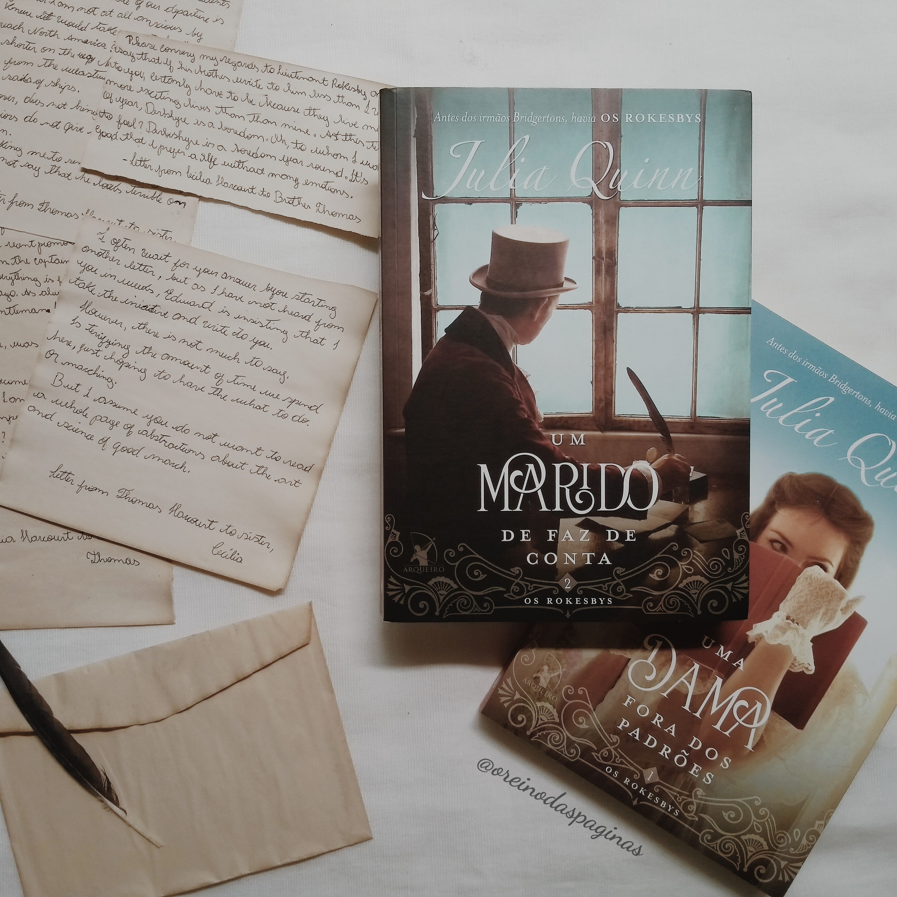
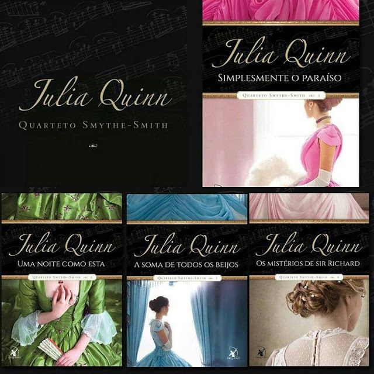
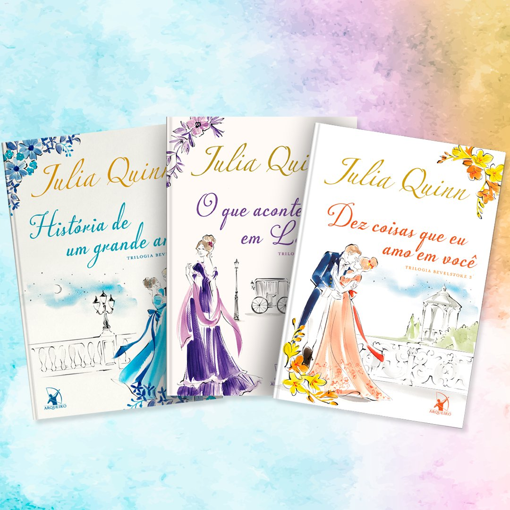

Nesta seção vamos trazer algumas das coleções mais conhecidas de Julia Quinn além da série os Bridgertons.
Os Rokesbys

Essa série se passa no final dos anos 1700, e surgiu após muitos fãs pedirem a autora para que ela escrevesse mais livros sobre a tão querida e divertida família Bridgerton; ela se animou em revisita-los, porém, não narrando a história de uma outra geração, como muitos esperavam. Segundo a autora, ela se viu muito mais interessado na era georgiana do que no início da era vitoriana, então decidiu voltar ao passado. Os protagonistas da trama são os Rokesbys, vizinhos e grandes amigos dos Bridgertons. Inclusive, eventualmente, a autora dá uma olhada em Edmund e Violet Bridgerton antes de se casarem, e até confessou que esse era um dos seus objetivos ao criar a premissa de Rokesby. São quatro livros: Uma dama fora dos padrões, Um marido de faz de conta, Um cavalheiro a bordo e Uma noiva rebelde.
O Quarteto Smythe-Smith

O Quarteto Smythe-Smith é composto por quatro livros: Simplesmente o Paraíso, Uma Noite como Esta, A Soma de Todos os Beijos, e Os Mistérios de Sir Richard. Cada volume narra à história de um casal diferente. Contudo, todas as protagonistas participam do famoso quarteto de cordas Smythe-Smith e, além do laço familiar que as une, também são amigas. Pelo seu palco passam as histórias mais cativantes e os casais mais apaixonantes. Honoria e Marcus se reencontram e reavivam sua amizade, Anne e Daniel sentem uma atração irresistível e precisam lidar com um perigo mortal. Sarah e Hugh são assombrados por um evento do passado, mas não a ponto de não poderem trocar (muitos) beijos. Já Iris e sir Richard... bom, Iris não tem a mais pálida ideia do que o levou a pedi-la em casamento – ele só pode estar escondendo um segredo.
Bevelstonke

A Trilogia Bevelstoke é composta pelos livros: História de Um Grande Amor, O Que Acontece em Londres e Dez Coisas Que eu Amo em Você. O primeiro livro, História de um grande amor conta o romance entre Miranda Cheever e Nigel Bevelstok. Uma história de muitas reviravoltas nas vidas dos protagonistas mais que Miranda fará de tudo para salvar esse amor. O segundo livro, O que acontece em Londres, traz a história de Olivia Bevelstoke e Harry Valentine, um romance cheio de suspense, espionagem e quem sabe, um pouco de paixão. E por fim o terceiro livro, Dez coisas que eu amo em você, onde Annabel Winslow está em uma grande enrascada. Tendo que escolher entre um homem de 70 anos que ela acha repugnante, mais com isso garante o futuro de sua família, ou deixar ser cortejada pelo sobrinho do velho charlatão e seguir o próprio coração, dando a si mesma a chance de um final feliz. Esses são os três contos que se passam na série Bevelstoke
Duologias
• Irmãs Lyndon, conta a história de Victoria e Eleanor Lyndon, filhas de um vigário do interior de Kent, Inglaterra. Sendo os livros “Mais lindo que a lua” onde se passa a historia de Victoria e em seguida o livro “Mais forte que o sol” contando a trajetória de Eleanor.
• Lady Whistledown, a cronista mais extraordinária do século XIX continua trazendo os acontecimentos mais picantes da sociedade londrina, com seus dois livros “Nada escapa a lady Whistledown” e “Lady Whistledown contra-ataca”.
• Os Agentes da Coroa, é ambientada na Inglaterra em torno de 1815, e vamos conhecer a história de Blake Ravenscroft e James Sidwell, dois amigos de infância, que trabalham como detetives para o governo, e em cada livro vamos acompanhar uma missão deles e de como encontrarão o amor de suas vidas.
• A dama mais... Conta a história pela busca de uma esposa por parte do irresistível conde Hugh Dunne no primeiro livro “A dama mais desejada”. E o segundo livro “A dama mais apaixonada” traz a história de um sequestro de quatro damas para que uma delas seja a esposa de um lorde escocês, será que em meio a tantas confusões o amor pode florescer?
Essas são algumas das séries de Julia Quinn, existem outras, que não foram mencionadas nessa seção.